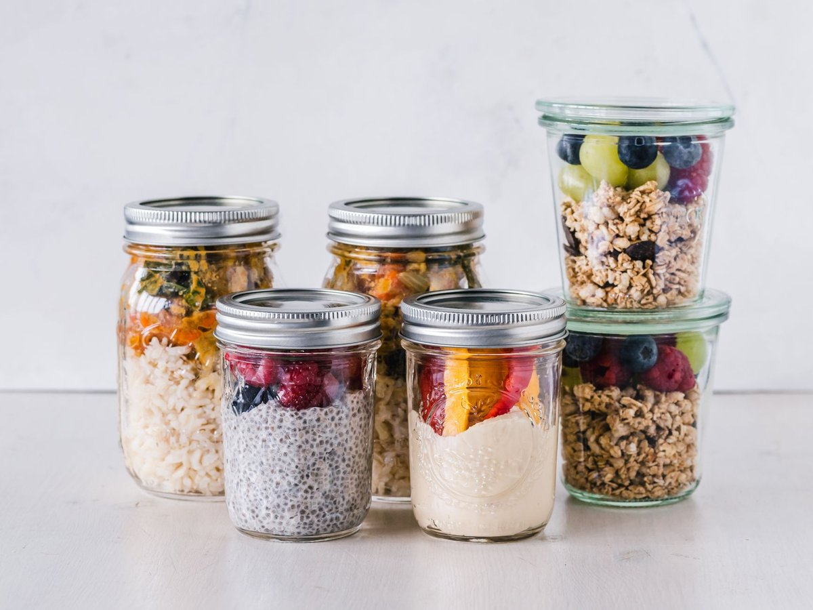

Feel More Energized with This Daily Budget Meal Prep Routine
Recipe at a glance
- Prep15 min
- Cook25 min
- Total40 min
- Servings4 servings
- Calories410 calories

Key takeaways
- I used to stand in the grocery aisle staring at $7 cereal boxes, feeling completely defeated by my wallet and my afternoon fatigue.
- My family was eating takeout four nights a week because cooking felt overwhelming, but our energy was plummeting and our bank ac
- Track what feels sustainable and adjust gradually.
I used to stand in the grocery aisle staring at $7 cereal boxes, feeling completely defeated by my wallet and my afternoon fatigue. My family was eating takeout four nights a week because cooking felt overwhelming, but our energy was plummeting and our bank account was bleeding.
That breaking point pushed me to build a simple Budget Meal Prep strategy that actually fits real life without demanding five hours every Sunday. You do not need organic dragon fruit or expensive superfood powders to feed your family well and reclaim your daily stamina.
The Simple Energy-First Batch Framework
Instead of preparing full, complicated recipes, I focus on prepping core components that mix and match easily. Building a resilient meal base saves both cash and mental bandwidth.
Every week, I pick three low-cost foundations: a complex carb, a hearty plant-based protein, and roasted sheet-pan veggies. Having these ready in glass containers eliminates the 5 PM panic attack about dinner.
If you want to stretch your dollar even further, check out this related healthy tip for reducing food waste at home. Combining budget staples like brown rice and black beans gives you complete proteins while keeping your bill under control.
The 2-Minute Win
Soak your tough leafy greens like kale or collards in cold water right when you get home from the store, trim the stems, and wrap them in a paper towel inside a silicone bag. They stay crisp for up to two weeks, stopping green waste immediately!
Overcoming the Afternoon Crash
Eating well on a budget solved most of my sluggishness, but dinner prep stress sometimes left me restless at night. When stress disrupted my sleep, my food cravings the next day went straight toward sugary, expensive snacks.
I started taking a quality Magnesium Glycinate supplement before bed to support muscle relaxation and steady, deep sleep. When I wake up rested, keeping up with my batch-cooking routine feels effortless rather than exhausting. Disclosure: This page may contain affiliate links.
For more ideas on staying consistent with night routines, review this another practical guide on evening habits. You can also explore a similar wellness insight on managing afternoon fatigue naturally.
Prioritize consistency over perfection—a prepped container of roasted sweet potatoes is a win, even if you order pizza to go with it.
To stay consistent with this approach, start small by prepping just one lunch component this week. Over time, these small shifts compound into major savings and vibrant energy. Feel free to explore more recipes guides to keep your family's weekly menu creative and affordable.
Educational only — not medical advice.
Recommended Reading
- Unlock Your Best Sleep: Daily Habits for More Energy & Focus
- The Ultimate Guide to Daily Hydration: Boost Energy & Wellness
- A Simple Protein Swap For Healthy Aging You Can Start Today
More in recipes
 recipes
recipesStruggling with Healthy Recipes? Try This Simple Reset
Struggling with healthy recipes after long workdays? Discover fast, nutrient-dense meals for busy professionals that cut
Read article → recipes
recipesStruggling with Healthy Recipes? Try This Busy Professional Reset
Ditch culinary burnout with practical healthy recipes built for exhausted professionals. Quick, nutrient-dense skillet m
Read article →Related posts
recipesStruggling with Healthy Recipes? Try This Simple Reset
Struggling with healthy recipes after long workdays? Discover fast, nutrient-dense meals for busy professionals that cut
Read article →recipesStruggling with Healthy Recipes? Try This Busy Professional Reset
Ditch culinary burnout with practical healthy recipes built for exhausted professionals. Quick, nutrient-dense skillet m
Read article → recipes
recipesHealthier French Fries? New Microwave Method Could Be a Game Changer!
Tired of greasy fries? Discover a new microwave method that could make Healthier French Fries? New Microwave Method Coul
Read article →